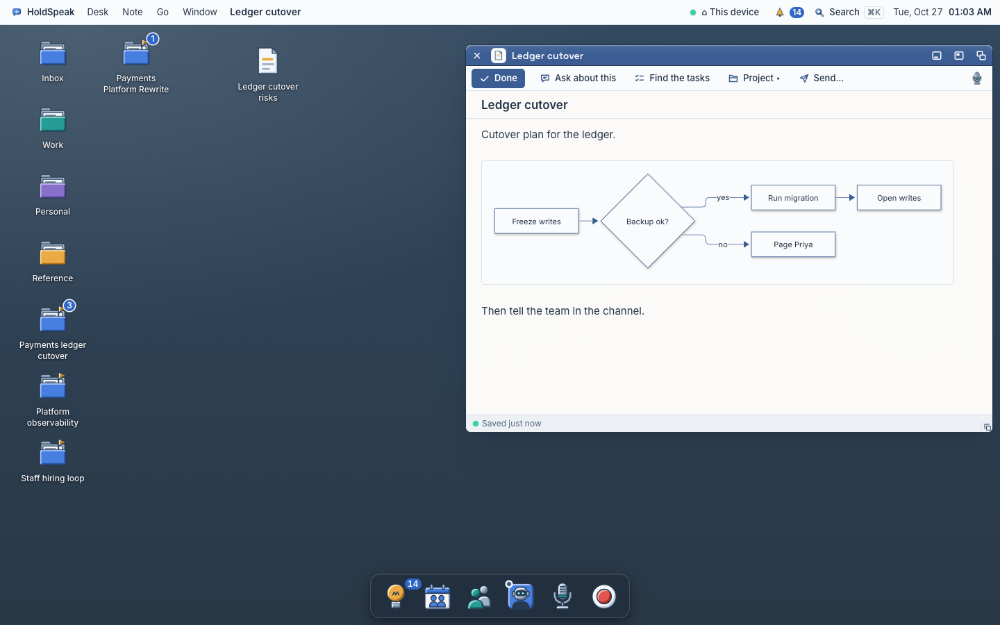
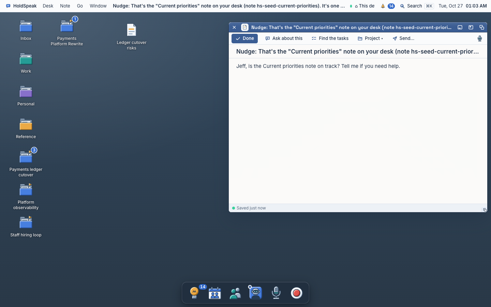

The Note as a workspace
Three directions for the Note window, drawn at real size (760 × 560) over the real 1440 desk, in our tokens and window grammar. Each one answers the same six questions. The recommendation is first.
The worked example is an architect's note, "Ledger cutover plan": a heading, a paragraph with a PR link, a task list, a flowchart, a decision line and an @Priya mention. The live preview (headings, lists, task boxes, links, code, tables) is assumed, as the parallel lane builds it.
Today: the title shows three times (menu bar, title bar, title row). The question band and the task rows push the editor down. Links collect in a "Linked items" fold under the text. The Project link is a well that opens under the editor.


What a note can do today
Read from the code on main 94129956f. One line each.
Verbs (toolbar)
- Done: saves, then closes the window.
ThoughtWorkspaceWindow.tsx:592 - Ask about this: saves, opens the Ask window with the note in About and the selected text quoted.
:593, :499 - Find the tasks: the hub reads the note and returns task and decision rows.
:594,POST /api/notes/{id}/outcomes/find - Project ▾: opens a well to pick a project and Add (a project resource, "related").
ProjectWell.tsx:27 - Send…: saves, then the Send wells replace the editor (destinations, preview, Send).
:596, :659 - Mic: speaks into the note at the caret; a kept voice draft offers Insert at caret or Copy.
ThoughtDocumentPane.tsx:135, :48 - ⌘S saves; ⌘↵ adds the answer, adds the draft, or is Done.
:540–556
Wells and bands
- The question band: a refinement turn asks a question; answer by text or voice, then Add to note.
:600–611 - The draft band: a refinement draft; Add to note appends it (never replaces your words).
:614, :374 - Task rows: "Who owes what" and "Decisions" ledgers; Confirm, Edit, Dismiss per row.
NoteOutcomesWell.tsx:121–193 - Project well: a project picker with Add and Close.
ProjectWell.tsx:41 - Linked items: a fold under the text with one Button per object link in the body.
ReadingDocument.tsx:80 - Diagram: a mermaid block draws as a flowchart in place.
mermaidPreview.ts - Built, not mounted: TaskWell (Task, Who, When) and ThoughtReadsWell ("Add notes" context). No import outside their own files.
Returns
- From Ask: Add to note grows the note; a clean window reads it again, a dirty one shows Changed elsewhere with Reload.
:262 - Back from Ask: the caret goes back to the quoted range, or the line says Source changed.
askReturn.ts:6 - A draft added: the added range is checked by SHA-256 and revealed.
:75 - Status bar: the save lamp and words (Saved just now, Changed elsewhere) and one verb: Reload, Retry or Stop.
:640 - Return to Project: a title-bar verb when the note opened from a Project.
:737
Filing and relations
- Project:
PUT /api/projects/{p}/resources/note:{id}. The note does not show which projects hold it. - Drawers: a note icon on the floor drops into a zone drawer (
zone_fileMCP). - People: a person's notes are a People write (
people_note_create), not a link from this note. - Object menu: Open, Rename, Duplicate, Delete, Hand to agent.
objectMenu.ts:60 - Object links: a Markdown link with a ref (
people:,project:,decision:,coder:…) opens that object's window.openObject.ts:172 - Not known to the note today: the meeting it came from (the source is typed, voice or note,
thoughts.ts:15), its projects (no reverse read), plain PR numbers and Jira keys.
A. The page and its margin Recommended
The text never moves. Answers and found tasks land in a margin at the window's right edge, each one beside the line it came from. The title lives in the title bar only. The filed place and the source meeting are words in the status bar that you can press.
 Freeze schema changesDoneReview PR #1482MConfirmDry run on stagingMeTell the team in the channelMe
Freeze schema changesDoneReview PR #1482MConfirmDry run on stagingMeTell the team in the channelMe Payments ledger cutover
Payments ledger cutover
 From Ledger sync, Oct 24
2 people · 1 decision
From Ledger sync, Oct 24
2 people · 1 decision
Shown: Find the tasks has returned (rows arrive one by one, 100 ms apart); the pointer is on "Review PR #1482", so its line in the text lights. An Ask answer is pinned beside the paragraph it quoted. The menu bar has no title (the patch over the menu bar shows its new empty middle). The project word in the status bar is under the pointer: press opens the Project room.
States at real size
Meeting notesWho, decisions, tasksWe move the payments ledger to the new store on Nov 14. The dual-write shim is in PR #1482 and must land before the freeze.
B. The drawer and the Info wing Direction
The page names itself: its first line is the title. Answers and tasks rise in a drawer from the status bar, as a real list view with columns. Relations live in an Info wing that you open from the toolbar.
Freeze schema changesPriyaNov 10ConfirmedReview PR #1482MarcusNov 6ConfirmDry run on stagingMeTell the team in the channelMePayments ledger cutoverLedger syncOct 241:1 on Thursday · owes 1 from last week
PAY-311To doShown: the drawer is open on Tasks; @Priya was pressed in the text, so the Info wing selects her and shows a short card. The editor keeps its top; the drawer covers its lower part and can be dragged taller. The Project verb leaves the toolbar: Filed in is in the wing.
States at real size
C. Inline, in the text Direction
Everything happens in the text. An answer opens as a plate under the paragraph you asked about. Find the tasks marks the lines in a left gutter, and you confirm a task by pressing its mark. The title bar holds the place and the name together.
Shown: an answer plate under the first paragraph (it is not part of the note until Add to note); the gutter marks pop in one by one; a filled mark is confirmed, a ring is proposed, the ember diamond is a decision. The ghost words after a line are the found owner and date.
States at real size
Meeting notes↵Task list…the shim is in PR #1482 and must land before the freeze.
The six questions, side by side
A on the phone (393)
The margin becomes a sheet that rises from the status bar. The name is in the title strip only. Rows are 44 px.
Freeze schema changesDoneReview PR #1482ConfirmDry run on stagingConfirmTell the team in the channelConfirmWhat each direction costs
A. Page and margin. Changes: ThoughtWorkspaceWindow.tsx (the bands and the outcome well move into the margin; the editor stays put), ThoughtDocumentPane.tsx (the title row goes; the empty-note starts; Linked items fold retired), NoteOutcomesWell.tsx (the rows render as margin rows), components/DeskWindow (rename in the title bar), DeskMenuBar.tsx (no title in the middle), thought-workspace.css. New kit species: Margin (a wing inside a window's content, which collapses to a sheet on the phone), ObjectToken (a CodeMirror decoration for people:, project:, decision:, PR and Jira refs), PeekCard (a hover card with one or two verbs), and a pressable StatusBar item. Hub: a reverse read "which projects hold this note" and a source-meeting field for "From…" (neither exists, see the inventory); rows carry no source offsets, so the row-to-line tie is a client text match that falls back to stacking.
B. Drawer and Info wing. Changes: the same window file, plus a new title rule: the title becomes the body's first heading, so thoughtTitle.ts, ownTitle and the window name follow the first line, and the hub's title field must track it (a rename becomes an edit of the text). New species: Drawer (a resizable bottom pane with segmented tabs), InfoWing (sections of 30 px object rows with a small card). The list view reuses ObjectList dense. The same two hub reads as A. Risk: a page H1 is what the window grammar removed elsewhere.
C. Inline. Changes: the editor itself. Answer plates are CodeMirror block widgets inside the document, which must survive edits, the reveal code (verifiedReveal) and the Ask return range. Gutter marks need each found row's exact text range, and the hub does not return one today (noteOutcomes.ts:9), so note_find_tasks must change. New species: a gutter extension, a block widget, a slash menu, a hover card. Highest cost and the most risk to the sole-writer save path.
Order of build for A
Smallest useful slice first. Each one is one lane and can merge alone.
- The title once. Remove the menu-bar title and the title row; rename in place in the title bar. Small, and the owner sees it at once.
- The margin, with Find the tasks. The new Margin species; the outcome rows move into it and arrive one by one; the editor no longer moves down.
- Row to line. Hover a margin row and its line lights; press it and the caret goes there (client text match).
- Answers in the margin. The question and draft bands, and Ask's return, become margin notes beside the quoted passage, with Add to note and Dismiss.
- Objects in the text. ObjectToken for the refs that open today (people, project, decision), then PR numbers and Jira keys; press opens the window; the Linked items fold is retired.
- The status bar place line. Needs the hub's reverse read of a note's projects; then the source meeting when the hub records it.
- The empty note. The cue line and the four starts.
- Peek cards on hover.
- Motion. The save lamp's one breath, the task tick, the row arrival.
- The phone. The margin as a sheet from the status bar.